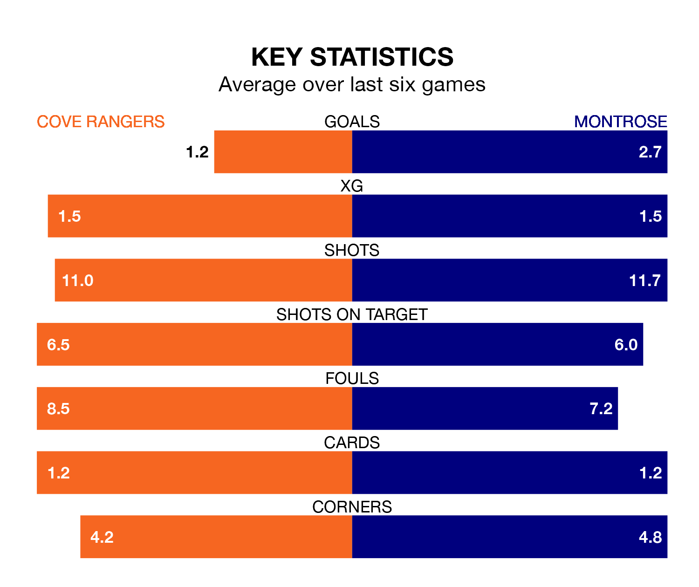

Saturday's match between Cove Rangers and Montrose promises to be one for the neutrals, as two of League One's most free-scoring sides go head-to-head.
Ahead of the game at the Balmoral Stadium, the Wee Rangers and the Gable Endies sit fourth and third in the goal-scoring charts, with 43 and 46 goals respectively.
Striker Rumarn Burrell leads the way for the home side, having bagged 19 goals in their 27 games to date.
And Graham Webster has been the main man in the opponents' penalty box for Montrose, with eight goals.
In the last 10 years, Cove and Montrose have played each other on 13 occasions. Cove won six of them, Montrose three, and they drew four times.
On average, the Wee Rangers scored 1.3 goals and the Gable Endies 0.8 in those matches.
Their last meeting was on December 30, when they played out a 1-1 draw.
Cove are in mixed form in League One, with two wins and a draw from their last six games.
With five wins and one loss over that period, Montrose's form is much better – they have taken 15 points from 18, compared to Rangers's seven.
The Gable Endies are third in the table after 27 games, of which they have won 12 and drawn six, earning 42 points.
The Wee Rangers are two places behind the visitors in fifth, with 11 wins and seven draws putting them on 40 points.
Montrose's Michael Gardyne is among the league's most creative players, racking up seven assists in 23 appearances so far this season, and holding second spot in League One's assist charts.
For the home team, Blair Yule has set up the most goals, having laid on five assists in 20 games.
Cove's last match was on Tuesday, a 1-0 loss against Falkirk.
Montrose beat Alloa Athletic 4-3 last time out, on March 2, with Blair Lyons, Kane Hester, Seán Dillon and Webster on the scoresheet.
Updated: 09:34 (UTC), 08/03/24